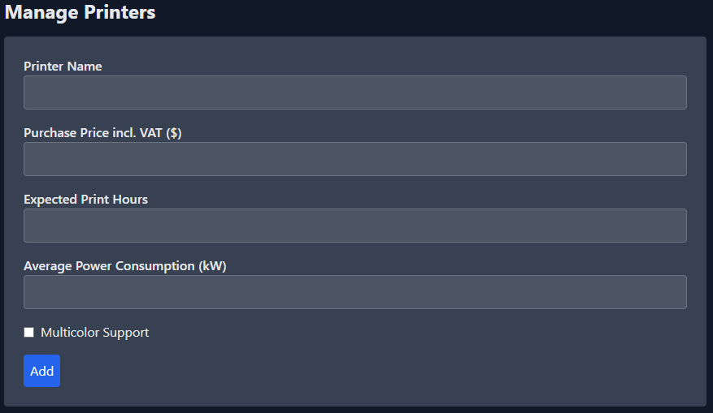
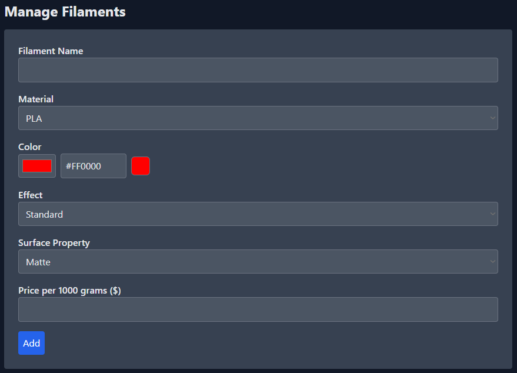
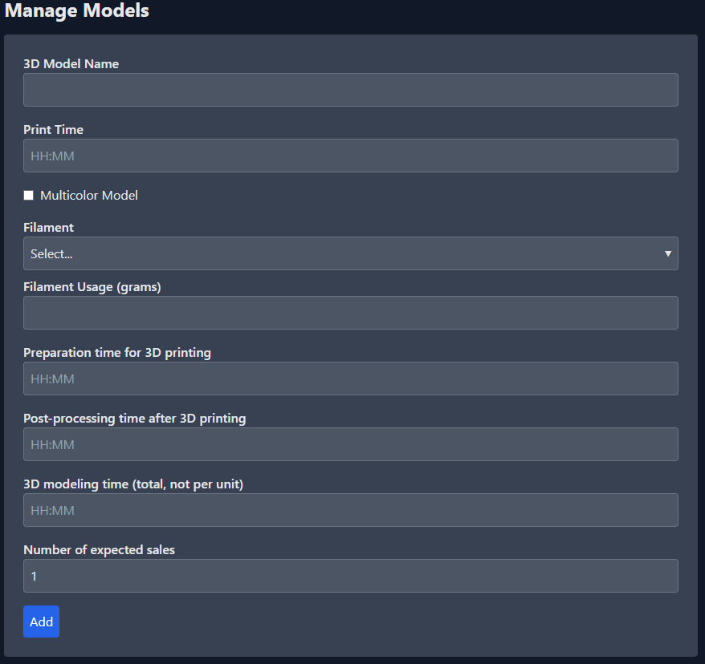
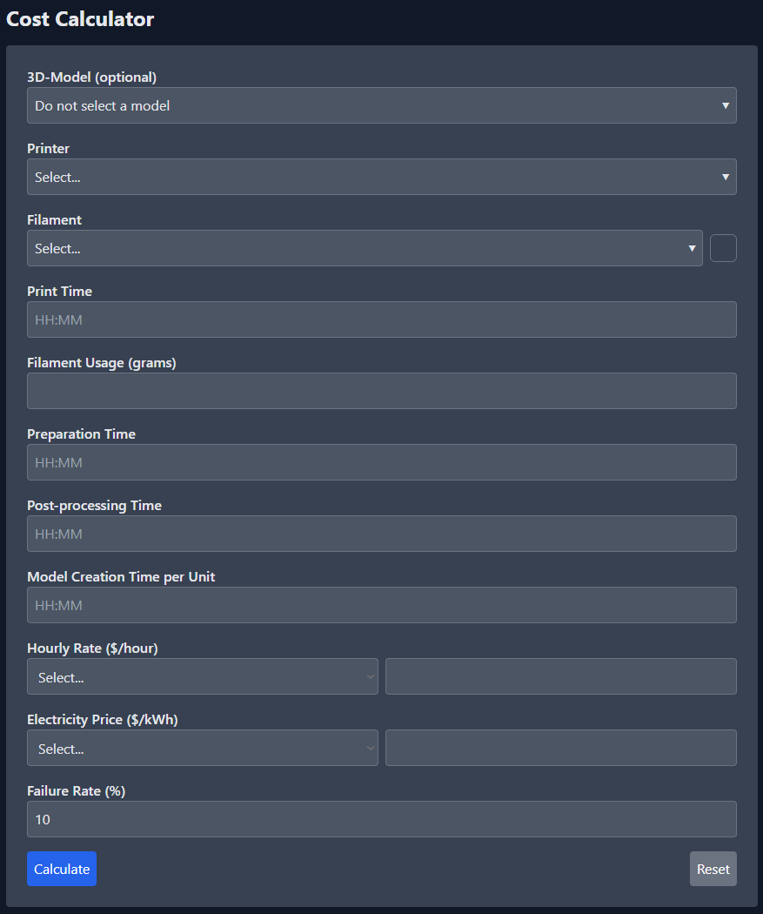
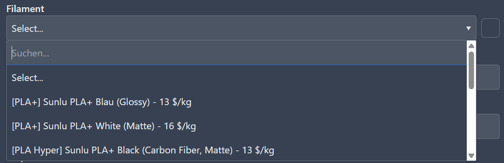

Welcome to Costify 3D!
This guide will make you an expert in using Costify 3D. We will walk through all the steps together, from setting up your data to the detailed cost analysis of your printing projects.
1. First Steps: Setting Up Your Master Data
The key to accurate calculations is solid master data. Before using the cost calculator, you should navigate to the following sections via the navigation bar (or the ☰ burger menu) and enter your data. You only need to do this once—the app will remember everything.
1.1 Manage Printers
Here you define the machines you use for printing.
- Printer Name: A unique name (e.g., "Bambu Lab P1S").
- Purchase Price: The cost of the printer. Required for calculating depreciation per print hour.
- Expected Print Hours: The estimated lifespan of the printer in operating hours (e.g., 5000).
- Average Power Consumption (kW): The average power usage during a print.
- Multicolor Support: Enable this for printers with an AMS/MMU and specify the number of colors.

1.2 Manage Filaments
Define your materials under "Filaments." The more details you provide here, the easier it will be to select them later in the calculator.
- Filament Name: A descriptive name you can easily recognize (e.g., "eSun PLA+ Black").
- Material & Color: Choose the material type and color. You can select the color using the color picker or by directly entering a HEX code (e.g.,
#1A1A1A). Both fields synchronize automatically.
- Effect & Surface: Specify special properties like "Metallic Gold", "Glow in the Dark", or "Matte/Glossy".
- Price: The cost for a 1kg spool.

1.3 Hourly Rates & Electricity Prices
Under "Hourly Rates" and "Electricity Costs," you can define different rates to stay flexible (e.g., "Personal Rate", "Electricity Tariff 2024").
2. Saving Models as Templates (Optional, but powerful)
If you frequently calculate costs for specific projects, save time by creating them as templates under "Models."
- Time Inputs: Click a time field to open the new, intuitive time popup. Enter hours and minutes directly.
- Distribute Design Costs: Enter the total design time and the expected number of sales. The calculator will automatically distribute the design cost across each unit.
- Multicolor Consumption: Define the exact filament consumption in grams for each color used.

3. The Cost Calculation
In the "Cost Calculator," everything comes together.
Workflow 1: Using a Model Template
- Select your prepared model from the dropdown.
- All relevant data (print time, filaments, work times) will be loaded automatically.
- Select the printer you want to use.
- Adjust the failure rate if needed.
- Click "Calculate." Done!

Workflow 2: Manual Calculation
- Leave the model field on "Do not select a model."
- Select a printer.
- Enter the print time and all other work times.
- Select the filament(s) and enter the consumption in grams.
- Choose an hourly rate, electricity price, and failure rate.
- Click "Calculate."
Pro Tip: Search Function
The dropdowns for Model, Printer, and Filament are equipped with a search function. Simply click the field and start typing to filter long lists in an instant.

4. The Calculation Formulas in Detail
The calculator determines the total cost from five components:
- Depreciation:
(Printer Price / Expected Print Hours) × Print Time
- Electricity Costs:
Power Consumption in kW × Print Time × Electricity Price per kWh
- Filament Costs:
(Usage in grams / 1000) × Price per kg
- Labor Costs:
(Sum of all work times) × Hourly Rate
- Failure Surcharge:
(Sum of costs 1-4) × (Failure Rate / 100)
The Total Cost is the sum of the subtotal (1-4) and the failure surcharge (5).
← Back to Calculator